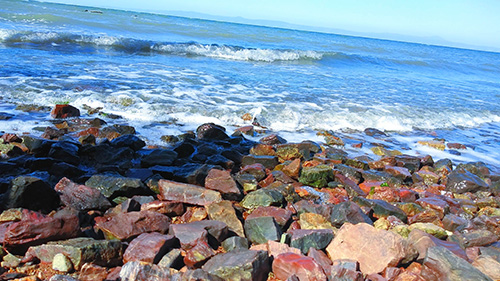
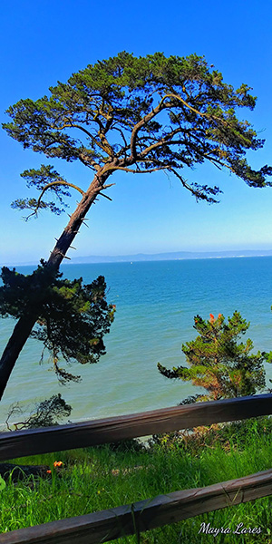
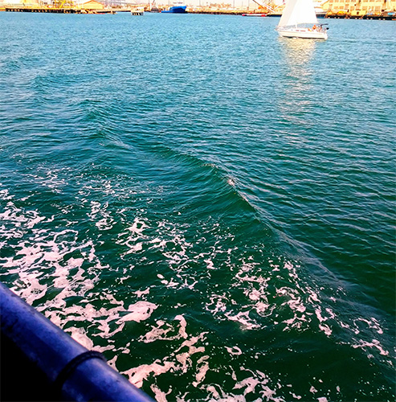
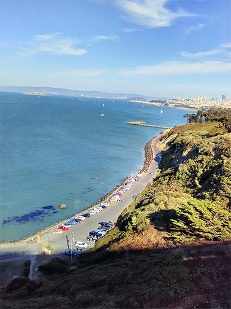

The Ocean
Taking pictures of the ocean is-to me- like killing two birds with one stone.
One gets both the ocean and the sky along with the clouds in the frame. Wherever
one goes, each beach is also very different despite there always being sand, rocks,
and water. Sometimes you get to capture the view from a hill, a hiking trail nearby, from a boat
from above, from up-close, from inside the ocean itself and it's fascinating to see
such diveristy in something that seems so identical.



